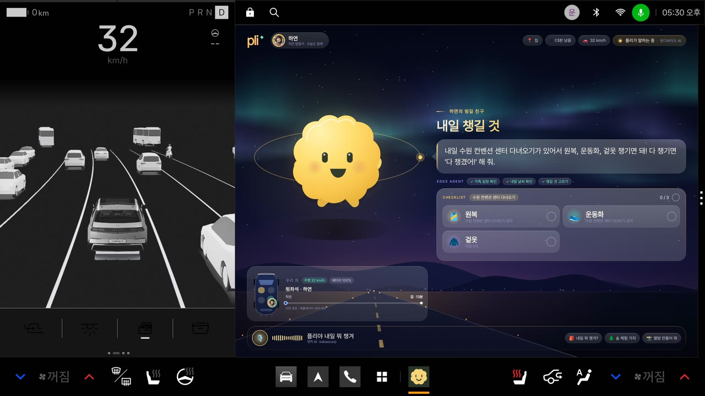
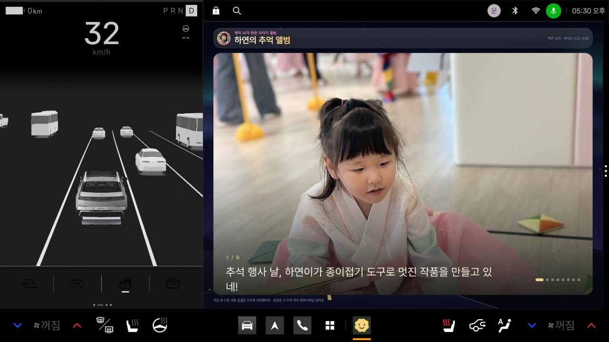
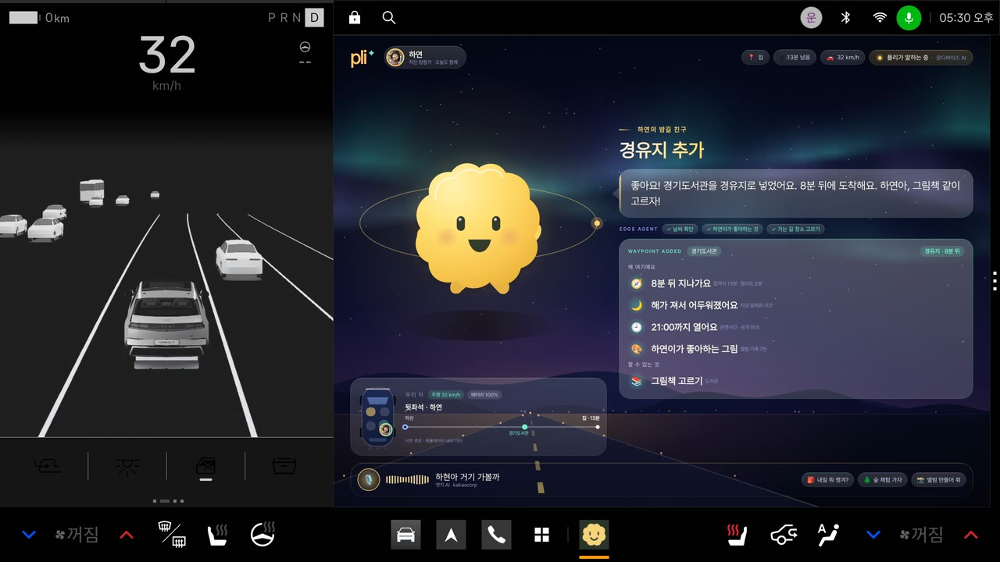

플리 · Pleos 차 안의 가족 AI 에이전트
pli ✦TEAM MOON · PLEOS CONNECT
IN-CAR FAMILY AI AGENT · PLEOS NATIVE
운전하는 부모 대신,
뒷좌석 아이 곁에.
플리는 차가 아는 것(경로·속도·위치)과 가족이 아는 것(어린이집 일정·앨범)을 엮습니다. 운전 중 화면을 볼 수 없는 부모 대신 아이와 이야기하고, 먼저 제안하는 Pleos 차 안의 에이전틱 AI입니다.
Pleos SDK 5종에이전틱 루프MCP 도구온디바이스 음성엣지 LLM
THE MOMENT ONLY A CAR HAS
하원길 20분, 부모는 운전하고
아이는 뒷좌석에서 혼자입니다.
“엄마, 심심해. 언제 도착해?”
아이는 지루하고, 부모는 운전 중이라 화면을 볼 수도 손을 쓸 수도 없습니다.
“내일 뭐 챙겨야 하지?”
어린이집 일정·준비물은 휴대폰 앱 안에 있습니다. 운전 중에는 열어 볼 수 없습니다.
“오늘 하연이 뭐 했을까?”
선생님이 올린 사진은 수십 장. 우리 아이가 나온 장면만 골라 보기는 어렵습니다.
“가는 길에 들를 데 없나?”
날씨·시간·아이 취향을 함께 따져 경로 위에서 고르는 일은 운전자에게 무리입니다.
차는 이미 어디로 가는지, 얼마나 남았는지, 지금 어디인지 압니다. 가족 서비스는 아이의 일정과 사진을 압니다.
플리는 둘을 엮어 차 안에서만 가능한 순간을 만듭니다.
SCENARIO · 학원 → 집, 12분
말 한마디와 차량 신호만으로 이어지는 하원길

1
하연 “플리야, 내일 뭐 챙겨?”어린이집 일정을 MCP로 조회 → 내일은 주말, 수요일 행사 준비물 2가지를 카드로.

2
엄마 “하연이 사진으로 앨범 만들어 줄래?”얼굴 인식으로 하연이만 고르고(다른 아이 얼굴 흐림), 엣지 LLM이 쪽마다 이야기를 들려줍니다.

3
플리가 먼저 “가는 길에 도서관이 있어요”주행·경로·날씨·아이 관심사로 고른 곳을 제안. 엄마 “하연아, 거기 가 볼까?” → Pleos 경유지 추가.
DESIGN PRINCIPLES
질문에 답하는 챗봇이 아니라,
차를 읽고 먼저 움직이는 동승자
Eyes-free
운전자는 말로만
부모의 요청은 음성 한 문장. 확인이 필요한 일(경로 변경)은 “거기 가 볼까?” 같은 자연스러운 대화로 승인합니다.
Proactive
차량 신호가 트리거
주행 속도·남은 시간·경로가 조건을 만족하고 대화가 비어 있을 때만 플리가 먼저 말합니다. 한 번의 여정에 한 번.
Seat-aware
운전석과 뒷좌석
부모에게는 존댓말로 판단 근거를, 아이에게는 반말로 놀이를. 같은 답도 듣는 사람에 맞게 말합니다.
Yields
길 안내가 먼저
내비 음성이 나오면 Android 오디오 포커스로 즉시 멈추고, “쉿” 한마디면 조용해집니다.
화면은 목소리를 돕는 보조 수단입니다. Pleos 왼쪽 차량 화면과 함께, 플리 화면에는 우리 차 패널(뒷좌석 아이·기어·속도·배터리·학원→집 경로와 들를 곳)을 실시간으로 그립니다.
pli ✦04 · SYSTEM ARCHITECTURE
HEAD UNIT · EDGE · MCP
헤드유닛·차량 엣지·MCP 도구의 3계층
PLAN → ACT → OBSERVE → ANSWER
답하기 전에, 확인하고 고릅니다
실제 실행 기록 · 주행 중 먼저 제안(집 가는 길)
1
차량 신호 읽기기어 D · 32km/h · 배터리 64% · 목적지 집 · 도착까지 12분
2
할 일 고르기가는 길 들를 곳 (주행 중 먼저 제안)
4
날씨 확인수원시 · 흐림 · 10°C · 비 없음
5
하연이가 좋아하는 것앨범 기록 · 그림 18번
6
가는 길 장소 고르기경로 옆 1곳 중 경기도서관 · 7분 뒤 (21:00까지)
| 도구 | 근거 데이터 |
|---|
| 차량 상태 | Pleos Vehicle: 기어·속도·배터리·와이퍼·문 |
| 가는 길 들를 곳 | NaviHelper 경로 · 위치 · 장소 팩 · 날씨 · 아이 관심사 → addWaypoint |
| 챙길 것 | 어린이집 MCP get_calendar · 날씨 · 목적지 |
| 이야기 앨범 | MCP list_albums/get_album · 얼굴 인식 · LLM 캡션 |
| 날씨 | 현재 관측 + 12시간 예보 |
| 열린 질문 | 로컬 LLM, 아이 말투 70자 이내 |
계획은 한국어 의도 규칙으로 즉시 결정합니다(소형 LLM의 라우팅 오류 회피). LLM은 관찰을 말로 바꾸는 데만 쓰고, 일정·준비물 같은 가족 사실은 절대 생성하지 않습니다. 단계는 앱 화면에 실시간 스트리밍됩니다.
MODEL CONTEXT PROTOCOL
가족 서비스는 MCP 도구로,
에이전트는 규격으로 부릅니다
왜 MCP인가
어린이집 알림장, 학원 일정, 가족 캘린더처럼 서비스마다 다른 API를 같은 tools/call 규격으로 감쌉니다. 에이전트 코드는 그대로 두고 도구만 추가하면 기능이 늘어납니다.
무엇을 부르나
get_calendar(month) → 일정과 “준비물 :” 줄을 사실 목록으로.
list_albums·get_album → 최근 앨범 사진을 비공개 폴더로 동기화한 뒤 얼굴 인식.
어떻게 지키나
읽기 전용 도구만 공개 · 127.0.0.1 루프백 · 베어러 토큰 · 임의 저장 경로 거부 · 응답 캐시 10분 · 실패 시 “확인하지 못했어요”로 정직하게.
→ {"method":"tools/call","params":{"name":"get_calendar","arguments":{"month":"2026-11"}}}
← "- 11/18(수) · <지역사회연계활동 '수원 컨벤션 센터 다녀오기'> · … · 준비물 : 원복, 운동화"
⇒ 플리: “내일은 주말이라 쉬는 날이야! 수요일 수원 컨벤션 센터 다녀오기가 있어서 원복, 운동화 챙기면 돼!”
pli ✦07 · ROUTE-AWARE SUGGESTION
ON THE WAY HOME
경로 위에서,
지금 이 아이에게 맞는 곳
1
경로 기하현재 위치→목적지 선분에 장소를 투영해, 진행 8~92% 구간·이탈 0.9km 이내만 남깁니다.
2
지금의 조건낮·맑음·3~31°C면 놀이터 있는 공원, 비·어두움·추위면 도서관.
3
아이의 취향앨범 캡션에서 가장 많은 활동(그림 18회) → “그림책 보러 갈까요?”
4
승인 → Pleos 경유지“거기 가 볼까?”에 NaviHelper.addWaypoint(FIRST). 거절이면 바로 집으로.
장소 데이터: OpenStreetMap(ODbL) 오프라인 팩 · 광교 일대 88곳(공원 40·놀이터 37·도서관 11), 양재 일대 82곳. 경기도서관 운영시간은 공개 안내(2026-10-21 수정)에서 가져왔습니다. 말하는 사실은 모두 팩·날씨·차량 신호에서만 가져옵니다.
ON-DEVICE · EDGE
낭독이 아니라 대화하는 목소리
0.05~0.6초
생기 있는 답 · 엣지 GPU
자주 하는 답은 상용 음성 MiniMax Speech 2.8 HD의 밝고 들뜬 아이 목소리로 미리 만들어 두고(받아쓰기로 발음 확인) 바로 들려줍니다. 처음 듣는 답은 Supertonic 3이 엣지 GPU에서 즉시 합성하고, 다음부터는 생기 있는 녹음으로 바뀝니다. 엣지가 끊기면 헤드유닛 엔진, 그다음 Pleos TTS로 자동 전환합니다.
201MB
음성 팩 · fp16 저장
APK(180MB)와 분리된 음성 팩을 한 번 설치하고 해시로 검증합니다. 원본과 들리는 차이 0.06dB(log-mel). 숫자는 “두 가지·이십 분”처럼 한국어로 읽습니다.
0.928
아동 음성 인식 벤치
기본 주파수가 높은 아이 목소리는 스펙트럼을 성인 쪽으로 보정한 판독을 함께 만들어 더 깨끗한 쪽을 고릅니다.
≥0.72
단체 사진 얼굴 일치 기준
YuNet 검출 + SFace 신원 비교. 단체 사진은 더 엄격한 기준을 쓰고, 다른 아이 얼굴은 모두 흐림 처리합니다.
생동감(음성 감정 모델의 각성도)은 낭독체 Supertonic 0.55에서 캐시된 답 0.84로 올랐고(사람이 연기한 엄마 대사 0.65), 받아쓰기로 발음을 확인한 녹음만 씁니다. 처음 듣는 답은 음색이 다른 Supertonic으로 먼저 나가므로, 실제 서비스에서는 같은 상용 음성의 실시간 합성으로 맞추는 것이 다음 과제입니다. 답 전체를 한 번에 합성해 문장 사이 쉼이 0.3초를 넘지 않아, 낭독체가 아닌 대화체로 들립니다. 재생은 Pleos TTS와 같은 이벤트 계약(start → done/stop)을 따르므로 오디오 포커스·쉿·완료 감시가 그대로 적용됩니다.
SDK INTEGRATION & PERFORMANCE
차의 신호를 아이의 언어로
| Pleos SDK | 플리가 쓰는 곳 |
|---|
| Vehicle 2.3.2 | 기어·속도로 출발·주행 판단, 와이퍼로 비 이야기, 2열 문, 배터리·충전 |
| NaviHelper 3.0.5 | 목적지·남은 시간, 도착 이벤트, 경로 요청, addWaypoint |
| FusedLocation 1.1.3 | 현재 위치 → 날씨·경로 주변 장소 |
| SpeechToText 3.3.1 | 엣지 인식이 없을 때의 차량 내 인식 |
| TextToSpeech 3.3.1 | 온디바이스 음성의 대체 경로 |
소프트웨어 창에서 전체를 다시 그리던 원인(0.1초마다 바뀌던 마이크 음량 상태, 의미 없는 상태 갱신)을 제거하고, 캐릭터와 배경을 Choreographer vsync + 하드웨어 캔버스로 분리했습니다.
PRIVACY & SAFETY BY DESIGN
아이의 데이터는 차 안에서,
운전자의 주의는 길 위에
로컬 우선
음성 인식·LLM·얼굴 인식·장소 선택은 엣지에서. 원본 사진은 비공개 폴더(권한 700/600), EXIF 제거, 원본 마이크 녹음은 보관하지 않습니다.
사실만 말하기
일정·준비물·장소는 도구 결과로만. 모르면 “확인하지 못했어요”. 위험한 요청은 부드럽게 거절하고 놀이로 돌립니다.
보호자 승인
경로 변경은 부모의 한마디 승인 뒤에만. 먼저 제안은 여정당 한 번, 대화가 비어 있고 주행 중일 때만.
주의 분산 최소화
내비 안내가 나오면 즉시 양보, “쉿”이면 다시 부를 때까지 조용히. 주행 제한 중에는 표시를 줄이고 음성 중심.
WHAT RUNS TODAY · WHAT COMES NEXT
지금 동작하는 것과, 실차로 가는 길
동작·검증
• 실제 APK가 Pleos 에뮬레이터 마이크로 듣고 답함
• 플리 목소리: 엣지 GPU 합성 + 헤드유닛 대체 엔진
• MCP 일정·앨범, 얼굴 인식 앨범
• 주행 중 먼저 제안 → 경유지 승인
• 자동 검사: 단위·엣지 AI·기기 계측·포털·런타임 가드
시연 한정
• 엣지 AI는 개발 PC가 차량 엣지 컴퓨터 역할(에뮬레이터 → 10.0.2.2)
• 에뮬레이터 내비가 경로를 계산하지 않아 ‘시연 경로’ 사용
• 장소 팩은 광교·양재 일대(시연 경로: 광교역 근처 학원 → 광교호수공원 남쪽 집)
다음 단계
• 실차 헤드유닛에서 음성 합성·인식 지연 측정
• 엣지 계층의 차량 내 모듈 / 플리 클라우드 배치 결정
• 장소 팩 자동 갱신(경로 기반 타일)
• 실제 부모·아이 발화와 실내 소음 평가
“하연아, 거기 가 볼까?” — 플리가 만드는 건 답변이 아니라 가족이 함께 고르는 다음 장면입니다.